A Department Group is a collection of departments, and is used to associate the member departments with accounts, thus creating sub-ledgers for the accounts. Only department groups can be associated with accounts—not individual departments.
A department can belong to any number of different groups. A group must contain at least one department before it can be associated with an account.
The list of department groups in your system will be displayed.
The Department Group entry window will be displayed.
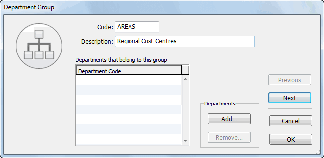
This code is used to identify the group and may be a maximum of 5 characters in length—characters can be alphanumeric—letters are automatically capitalised and spaces are converted to underscores—the “@” character is not permitted.
Enter a description for the group into the Description field
If you have previously defined departments in your system, add departments to the group at this point. If you have not already created Departments, groups can be assigned to departments as they are created.
To assign a department to a group:
Click the Add... button
The Add to Group window will be displayed.
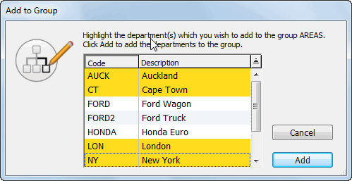
Once you have clicked the Add button you will not be able to change the code of the group and the Cancel button is dimmed. If you find that you need to change the code of the group, accept the record as is and modify it later. See the following section for details.
Click the OK or Next button to save the changes
You can alter any information about a group simply by double-clicking the Department Group in the Department Group list. You can add more departments to the Group by using the Add button as described above.
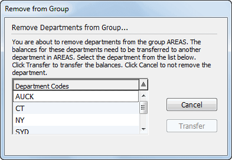
A dialog box asks you to choose which of the other departments in the group will receive the historic balances and any transactions for the department being removed.Clicking Cancel will close the window without saving the changes.
Department Groups may only be deleted if they have not been assigned to an account. If a Group is assigned to an account, you will be warned when you attempt to delete the Group, and will need to go into the account(s) concerned and change the group.
Departments cannot directly be associated with general ledger accounts. Instead you associate a Department Group with the account—the account is then automatically split into separate accounts (subledgers), one for each group. We call this departmentalising an account.
All accounts associated with the group from which the department has been removed will have that sub-ledger deleted, and any balances will be transferred to the nominated department.
When you departmentalise an account, it is split into a set of
subledgers, one subledger for each department in the group. As the account itself no longer exists as a single entity, its balances are transferred to one of the subledgers. The change will be recorded in the Log File.
To assign the new group to the account:
The Account entry window is displayed.
Choose the Group from the Dept Group pop-up menu
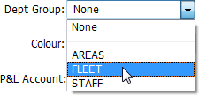
To Departmentalise an account, choose the Group from the Dept Group pop-up menu.
All transactions (including posted) that use the account-department are changed to have the nominated department instead of the removed one.
Clicking Cancel leaves the department in the group.
Click OK in the Account window to make the change (or Cancel to discard)
MoneyWorks Gold splits the account into sub-ledgers, one for each department in the chosen department group. Because you are splitting an existing account, MoneyWorks will need to know into which of the new subledgers to place any existing balances and transactions. It will prompt
you to choose:
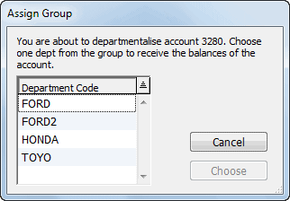
All transactions, including posted transactions, that use the account are changed to reflect this, so that detail lines for the account will now include the nominated department code. This may take some time.
If necessary, you can use a journal to redistribute the balances for the departments in the new group once the changeover is completed.
Alternatively you may want to have a special “general” department in the group whose sole function is to take on the historic balances.
To “undepartmentalise” a departmentalised account, you disassociate the account’s department group from the account. This causes all the subledgers in the account to be consolidated into the account itself.
All transactions that use the account, including posted transactions, will be modified to reflect the fact that the account no longer has departments. The change will also be recorded in the Log File.
To Undepartmentalise an Account:
The Account entry window is displayed.
Choose None from the Dept Group pop-up menu
You will be asked for confirmation.
Click OK to save this change to the account
Historic balances from the sub-ledgers for each of the departments in the group are consolidated into a single account code. The department code suffixes will be removed from the detail lines of any transactions. This process may take some time.
Changing an account from one Departmental Group to another is a two step operation.
Modify the account to remove the existing department group as previously explained
Modify the account again and assign it the new department, as explained above
Classifications are to departments what the pre-defined categories are to accounts—they are used to group related departments together for reporting purposes. A department can be associated with one classification, and this can be altered at any time.
The Classifications command in the Show menu displays a list of all the departmental classifications set up for your system. If none exist, the list will be empty.
The list of classifications in your system will be displayed.
The Classification entry window will be displayed.
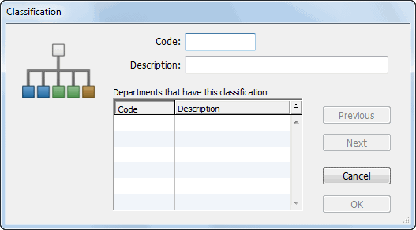
This may be a maximum of 5 characters in length—characters can be alphanumeric—letters are automatically capitalised and spaces are converted to underscores—the “@” character is not permitted.
Click the OK or Next button
Classifications can only be assigned to Departments in the Department entry window — see Adding a new Department.
Once assigned the codes and descriptions of the departments assigned to a particular classification appear in the scrolling list at the bottom-left of the Classification entry screen.
Modifying a Classification: You can change the details of a Classification at any time by double-clicking on its record in the Classification list window.
Deleting a Classification: A Classification can only be deleted if no Departments are assigned to it. You will be warned if you attempt to delete a classification that has departments assigned to it—you need to change the Classification for the departments concerned, and then delete the classification
The product account codes within MoneyWorks can be set up so that the code in the Salesperson field of each transaction is automatically appended as a department to the control account for the product. Thus if you have departmentalised your sales accounts by salesperson (perhaps using their initials as the department code), you can enter the initials into the Salesperson field and these will be appended where appropriate to the base sales account.
To do this, use the Append Salesperson check box in the Control Accounts section of the Product entry screen. Then, whenever you create a product transaction, you need only to record the salesperson’s initials (the department code) into the Salesperson field and the transaction will be “charged” to the correct subledgers.
You set the Append Salesperson option in the Product file for either (or both of) the income account when selling and the expense account when buying.
If the product already exists, double click on it, otherwise create the product in the normal manner
The product entry screen will be displayed.
This determines which control accounts are required.
Set the Append Salesperson option for the account by clicking on the check box
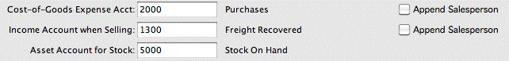
The cursor will move to the account field
The account must be departmentalised, but do not enter a department at this point (e.g. enter “1000”, not “1000-DEPT”).
The Append button will reset itself if the account is not departmentalised.
If you enter the code for a departmentalised account without having set the Append option, the account choices window will open because it wants a complete code with department. Click Cancel and then set the Append option, or choose the account-dept combination from this.
The Salesperson field in a transaction will affect any transaction that involves a product that has a control account set up with the Append option. Whenever one of these is encountered, MoneyWorks will append the code in the field onto the end of the account in the transaction. If the resulting code is not a valid account-department combination, an error message will be displayed:
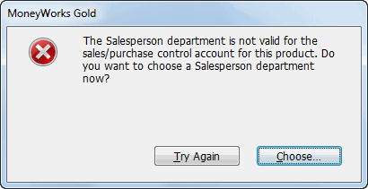
Clicking Try Again allows you to rekey the product.
Clicking Choose will display a choices list of valid departments for the product’s control account.
Note: The name of the Salesperson field can be changed in the Document Preferences;
You will not be able to see the Salesperson field on the transaction entry screen if the Field view is set to Simple.
Because the Salesperson field must contain a valid department, take care that any validation list assigned to the Salesperson field only contains valid department codes.
This tutorial will take you step by step through many of the features of the MoneyWorks job costing module. It is assumed that you are familiar with MoneyWorks before you start—if not, you should work through the MoneyWorks Tutorial.
If you are an architect, graphics designer, mechanic, lawyer, builder or similar your income is derived primarily by selling your skills and time. In order to maximise your income, you need to manage and record the time you spend on specific projects or for specific clients.
In addition to time, you may have incurred direct expenses in completing the work (courier charges, parts, subcontractors and more). You will want to recover these expenses from the client when you bill them, or, if you have provided a fixed quote for the work, you will want to check that you have made a profit when the job is completed.
The job costing within MoneyWorks allows you to keep track of time and disbursements, and if necessary automatically invoice these.
We’ve assumed that you are familiar with MoneyWorks and have the Acme Widgets Tutorial file open. Because not every business needs job costing, it is disabled by default and needs to be turned on.
To turn the job costing features on:
The MoneyWorks preferences window will open. This contains a number of options that allow you to set MoneyWorks to work in the manner that best suits your operations.
Click on the Jobs tab
The Preferences window will be shown.
Turn the Enable Job Costing and Time Billing check box on
The Default Markup and Work-in-Progress Account fields in the window will be enabled:
Default markup Goods or services purchased specifically for a job are often charged out at a higher rate than what was paid for them. You specify a default markup to use here—you can override this later for specific jobs.
Default Work-in-Progress account At the end of the financial year (and indeed, possibly at the end of each month), you will want to know how much work you have done that has not yet been charged for. MoneyWorks can calculate this work-in-progress amount for you, and transfer it into a nominated account.
In the Default markup field type “20”
The markup will be 20% unless otherwise specified.
Type “5600” into the Default Work-in-Progress account field
This is the work-in-progress account code for Acme Widgets.
The preferences window will close.
The job costing has now been enabled and can be used.
Acme Widgets have secured a contract to refurbish a widget farm. They want to add this job to the job file.
The jobs list will be displayed.
The job entry screen will be displayed.

This contains details of the job, including information to help you manage the project. For the purposes of this tutorial we are just going to use a few of the available fields— see Job Control for a complete explanation).
This is the unique code by which the job will be identified. Codes can be alpha-numeric if required.
This is a brief description of the job.
Type “White” into the Client field
This is the code for the client for whom the job is being done, and must be for a debtor (because we are going to send them an invoice at some stage). If the client is a new one you can create a new code and enter the client details at this point. In this case the client is an existing one.
 Set the Billing
menu to Cost Plus
Set the Billing
menu to Cost Plus
Jobs can be done either for a quoted fee, or on a time and materials (cost plus) basis, as is the case for this job. In this case Acme Widgets will be charging a 25% markup on the materials used.
The job entry window will close, and the job will be shown in the job list.
Having set up a job we can enter time or disbursements against it. These will be accumulated over the life of the job, and used to prepare invoices and reports. They are recorded either directly into the_Job Sheet Items_ list, or if collated, using the Job Timesheet entry. We’ll use the list at this point.
The Job Sheet Items list will be displayed.
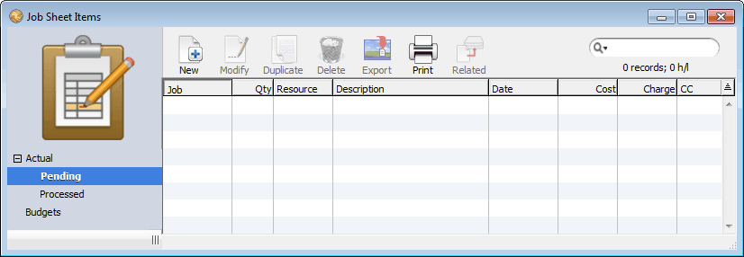
This list contains a complete history of all activities recorded against all jobs. Activities fall into two types: tasks that have actually been done (Actual); and a plan of the resources required for the job (Budget). These are accessible from the sidebar tabs, with Actual being further divided into two types, Pending and Processed:
Pending This lists all job sheet items that have been entered but not yet charged out. When the items are invoiced they will be automatically transferred to the Processed tab.
Processed: This lists all job sheet items that have been charged out.
Like all MoneyWorks lists, this list can be sorted (by clicking on the column heading), summed (Sum Selection from the Select menu), searched and printed.
Jo Bloggs, the senior widget Engineer, has spent 3 hours with the client discussing the implementation and requirements of the project. This needs to be recorded. We need to create a new entry—this goes into the Pending part of the Job Sheets Item file.
Click on the Pending sidebar tab
This shows all unbilled job items —in this case there are none.
The Job Sheet entry window will be displayed.
 Type “100” into the
Job field and press tab
Type “100” into the
Job field and press tabThe job and client details are displayed to the right of the job field.
This is the number of hours that are being recorded.
Type “T80” into the Product/Resource field and press tab
The total amount chargeable is calculated and displayed. Jo Bloggs is charged out at $80 per hour1, so three hours of his time is worth $240.
T80 is the code that Acme Widgets use to record staff time that is to be charged at $80 per hour. In practice you might have different codes for each staff member, and (if one staff member has more than one chargeout rate) you might assign him or her more than one code.
This is a description of the work that was done, and completes the entry.
Note that for the purposes of this tutorial we have ignored the Date field. In practice you would want this to be accurate We can also customise the entry window to minimise tabbing or add validations.
Click OK
The Job Sheet Item entry window will close, and the Jobs Sheet Items list window will be displayed, with our new entry listed.
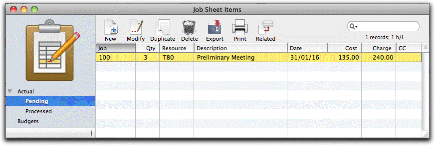
Helen Reeves has done 4 hours work in designing the layout of the refurbished farm. She has also had to use a couple of widgets out of stock. These need to be recorded.
The Job Sheet Item entry screen will be displayed.
This is the code of the job for which the work was done.
Type “4” in the Qty field, and “T60” in the Product/Resource field
This is the chargeout code for Helen.
This completes the entry.
The entry will be filed, and you will be able to enter a new job sheet item. In this case we need to record the two widgets that Helen has used.
Type “2” in the Qty field and “BA100” into the Product/Resource field, then press the tab key
Text will be displayed on the screen indicating that this is a stocked item.
BA100 is the product code for the type of widgets that Helen used. These items are stocked items, and Helen has taken them out of the warehouse. Because these have already been receipted into the stock system, MoneyWorks needs to create a special accounting entry (a “stock requisition journal”) to transfer them out of stock. This will be done when either the Next or OK button is clicked.
The entry is filed and, because this is a stock requisition, a journal is created to transfer the value of the items requisitioned from a stock account to an expense account.
Thus far we have seen how to enter time and stock requisitions. However jobs also can attract expenses (disbursements), and if these are tracked they can be recovered from the client. Helen had to drive 50 kilometres on a site visit. Acme Widgets charge travel at a flat rate of 54 cents per kilometre.
In the Job field type “100”
In the Qty field type “50”, and in the Product/Resource type “KM”
In situations such as this, it is appropriate to enter the expense record directly into the job sheet items. Other examples of this might be for photocopy recovery, tolls and so forth. However in many cases the company will be directly charged for the expense.
As a part of the job, Acme Widgets commissioned some consultants to investigate the planning aspects of the refurbishment. This charge against the job can be recorded directly against the job when the invoice from the consultants is processed in the normal Creditor transaction system of MoneyWorks.
A new transaction entry window will be displayed.
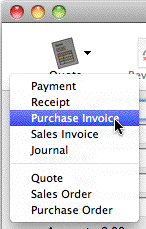
Set the transaction type to Purchase Invoice and set its type to By Account (if necessary)In the Creditor field type “BSUPP”
This is the code for the consultant concerned.
In the Amount field type 4500
Type “Consultant’s Report” in the description
To associate an expense with a job you must specify the job code in the job column.
The line should be as follows:
You will see a new entry with a product code of Job-Misc in the list. This was automatically created when the originating accounting transaction was posted. Note that the amount to charge has been automatically increased by the job markup percentage.
The job sheet list is one way to enter information about resources used on a job. Often however the information may come already “batched” into some form—a person’s timesheet is an obvious example, which records all the work for that person over a set period of time. Another example is a “job bag”, where a manual list is maintained of all the time and materials used on a particular job.
MoneyWorks has a special entry form that allows for fast input of collated data. This is referred to as (for lack of a better name) TimeSheet Entry. To access this:
The Timesheet entry window will be displayed:
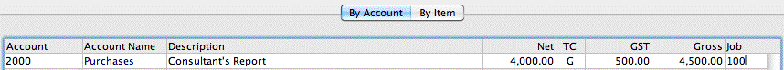
When a transaction is posted, the information in any of the detail lines that contains a job code is automatically
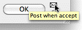
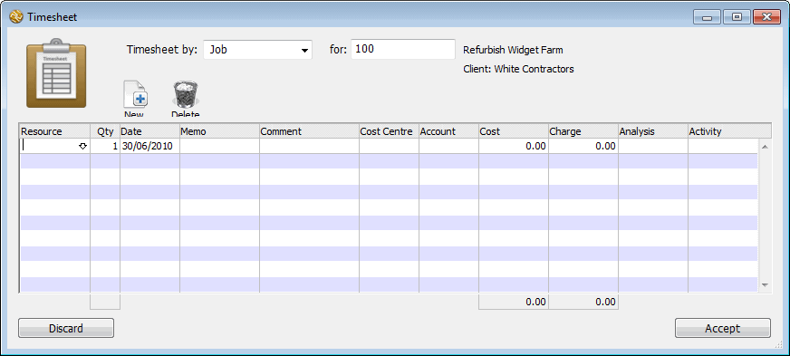
Click on the Posticon
To enter the job bag for our job:
Set the TimeSheet by pop-up menu to Job
transferred to the Job Sheet Items file so it can be billed out.
You set this based on how the data was collected. For example, if it was a time sheet, you would enter it by Resource.
100 is the code of the job bag we are entering. All entries on this screen will be assigned to job 100. Our job bag has the following entries:
| Code | Qty |
|
|---|---|---|
| T60 | 3 |
|
| T80 | 5 |
|
| BA100 | 1 |
|
| T60 | 2.5 |
|
In the Resource column, enter T60 and press tab
In the Qty column, enter 3 and tab to description
In the Description column, enter “Revised Sketches” and press the return key
The cursor will move to the next line
The final timesheet screen should be:
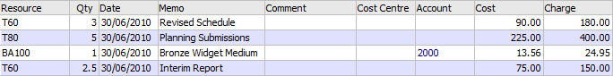
Click the Accept button
The window will close and the items you have entered will appear in the job sheet list ready for billing.
Thus far we have been entering time and costs incurred in doing the work. We now need to issue an invoice for the work done. MoneyWorks will create an invoice for us automatically.
The Bill Job window is displayed.
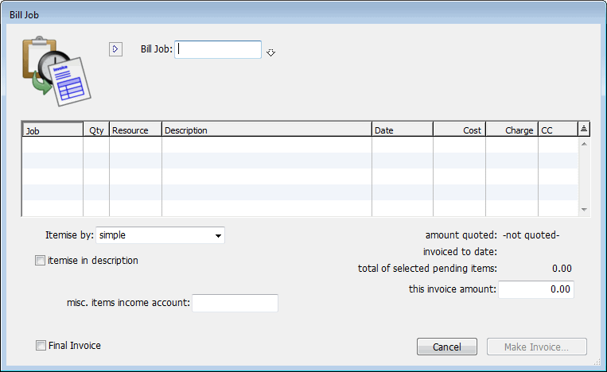